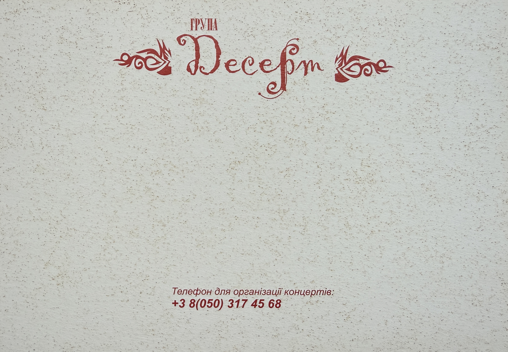

Dessert Promotional Photo Card (2005) – Uliana Latyk

Basic Information
| Material Type | Promotional Photo Card |
| Group | Dessert (Десерт) |
| Group Members Featured | Uliana Latyk and Mariana Krylyk (Мар'яна Крилик) |
| Current Stage Name | Ana Danch |
| Year | 2005 |
| Language | Ukrainian |
| Archive Category | Photos / Promotional Material |
| Preserved Sides | Front and Back |
Description
This preserved promotional photo card from 2005 documents the Ukrainian group Dessert (Десерт) and features group members Uliana Latyk and Mariana Krylyk (Мар'яна Крилик).
Uliana Latyk is now known professionally as Ana Danch. The promotional card is preserved as part of the visual documentation of her early artistic career during her period as a member of Dessert.
The front side presents a promotional photograph of the two members of Dessert together with the stylized group name «Десерт».
The reverse side displays the printed designation «ГРУПА Десерт» and a telephone number provided for concert organization.
This item is documented as promotional material for the group Dessert and is clearly distinguished from later solo promotional material released under the Ana Danch stage name.
Archive Information
| Original Name | Uliana Latyk |
| Current Stage Name | Ana Danch |
| Group | Dessert (Десерт) |
| Other Group Member Featured | Mariana Krylyk (Мар'яна Крилик) |
| Year | 2005 |
| Archive Category | Photos / Promotional Material |
| Archive Material | Promotional Photo Card |
| Preserved Material | Two-sided promotional photo card |
Credits
| Group | Dessert (Десерт) |
| Group Members Featured | Uliana Latyk and Mariana Krylyk |
| Uliana Latyk | Now known professionally as Ana Danch |
| Photographer | Not identified in the preserved material |
Source Information
| Source Type | Original Promotional Photo Card |
| Group Name Printed | Десерт |
| Year | 2005 |
| Group Members Featured | Uliana Latyk and Mariana Krylyk |
| Printed Designation | ГРУПА Десерт |
| Printed Contact Text | Телефон для організації концертів: |
| Concert Organization Telephone | +3 8(050) 317 45 68 |
| Publisher | Not identified in the preserved material |
| Printing House | Not identified in the preserved material |
| Photographer | Not identified in the preserved material |
Archive Materials
Front side of the 2005 Dessert promotional photo card featuring group members Uliana Latyk and Mariana Krylyk.

Reverse side with the Dessert group name and printed telephone number for concert organization.
Notes
This promotional photo card documents Uliana Latyk’s professional activity as a member of Dessert in 2005. Uliana Latyk is now known professionally as Ana Danch.
The two group members featured on the preserved front side are documented in the archive as Uliana Latyk and Mariana Krylyk (Мар'яна Крилик).
The material forms part of Ana Danch’s documented early artistic history under the name Uliana Latyk while remaining clearly distinguished from her later solo Ana Danch material.
The historical telephone number printed on the reverse side is reproduced solely as documentary evidence of the original promotional material. Its inclusion does not imply that the contact information remains current.
No photographer, publisher or printing house is identified on the two preserved sides, and no such information has been added by assumption.